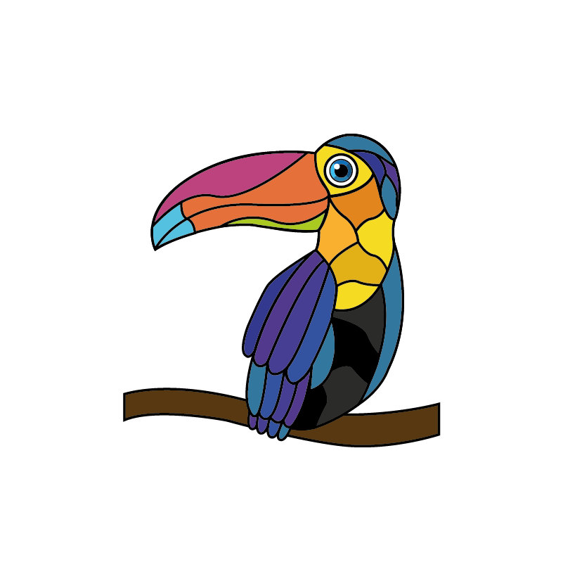

VITRALES PERAFÁNFundado en 1976 · Caracas, Venezuela
Más de 45 años fabricando, restaurando y manteniendo vitrales en todas sus técnicas, a nivel nacional e internacional.
45+
Años de trayectoria
1976
Año de fundación
2ª
Generación al frente
Nacional
Cobertura e instalación
El taller
Vitrales PERAFÁN fue fundado en 1976 por Alirio Hernando Perafán (+), quien se formó en la Casa Velazco (Taller de Vitrales en Cali – Colombia), iniciando un pequeño taller artesanal dentro de su propia vivienda, independizándolo 2 años después.
Desde sus inicios Herney Perafán Ibáñez (hijo menor, ingeniero mecánico), estuvo al lado de su Padre (+) inicialmente en la parte de Diseños y Dibujos, posteriormente fue aprendiendo todas las técnicas de la elaboración de Vitrales, quien actualmente está a cargo del Taller.
El Taller de Vitrales PERAFÁN tiene una experiencia y trayectoria de más de 45 años, fabricando Vitrales y todo lo concerniente a este Arte, a nivel nacional.
Actualmente cuenta con su propio Diseñador Gráfico (nieta del fundador), desplazando los bocetos realizados en acuarelas y creyones.
Montaje en taller · Proyectos instalados
Servicios
Desarrollo de proyectos, fabricación, mantenimiento, valuación, evaluación, desmontaje, reparación y restauración de vitrales en todas sus técnicas o tipos.
01
Cada proyecto se realiza acorde a las expectativas o especificaciones entregadas. Presentamos la propuesta gráfica (prediseño) para visualizar colores, imagen, distribución y la conjugación con las estructuras adyacentes.
02
Llevamos los vitrales a su estado original, conservando tonalidades, trazos, texturas y sobre todo la calidad de los mismos, respetando las autorías de cada obra.
03
Trabajos de peritaje y patología de vitrales, valuación y evaluación técnica del estado de cada pieza.
04
Instalación de vitrales importados, desmontajes y embalaje de vitrales existentes para su reinstalación.
05
Piezas artísticas en vidrio, lámparas, parabanes y todo lo relacionado con vidrio decorativo.
06
Vidrios laminados y templados en sus diferentes usos y ambientes, además de asesoría en cualquier tipo de consulta relacionada.
Proceso
PASO 01
Nos trasladamos al sitio, tomamos dimensiones del área y evaluamos todas las condiciones de ubicación.
PASO 02
Con una idea podemos cotizar desarrollando un prediseño: proyección gráfica con colores, distribución e imagen.
PASO 03
Corte, armado y emplomado pieza por pieza, en la técnica que corresponda al proyecto.
PASO 04
Montaje en obra a nivel nacional, con servicio posterior de mantenimiento y reparación.
Galería
Faltan categorías por llenar: lámparas y parabanes. Envíanos esas fotos y las sumamos a la galería.
Testimonios
testimonio 1 — texto + nombre del cliente y ciudad
Pendiente
testimonio 2 — texto + nombre del cliente y ciudad
Pendiente
testimonio 3 — o enlace a reseñas de Google
Pendiente
Preguntas frecuentes
El precio de los vitrales varía según el tamaño (se cotiza por m² a partir de 3 m²), la complejidad o número de piezas, y los colores presentes, destacando los rojos, amarillos y naranjas, con un mayor precio.
Contacto
Los vitrales tienen cabida en residencias, centros religiosos, instituciones públicas o privadas, hoteles, centros comerciales y centros culturales. Atendemos a nivel nacional e internacional.
Teléfono / WhatsApp
+58 414 136 7355Taller
Av. Andrés Bello, Edificio Olimpo, semisótano, sector Santa Rosa, Parroquia El Recreo
Ver en Google Maps →Horario
Lunes a viernes: 7:30 am – 5:00 pm
Sábados: 7:30 am – 1:00 pm